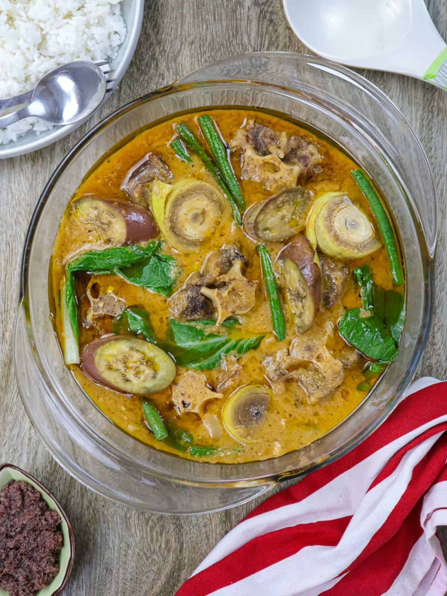
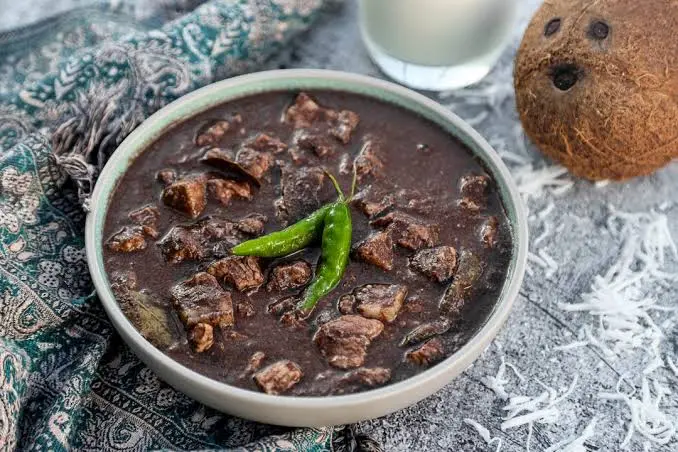

About
Welcome to this recipe website! This is a project created as part of The Odin Project curriculum, built to practice and showcase basic web development skills. The recipes here are not meant to be comprehensive or professional — they're just part of a learning journey. The main goal is to apply HTML, CSS, and potentially JavaScript in a hands-on way.
Thanks for stopping by!
LIST OF RECIPES:
Pork Adobo

is a dish that is usually made with meat (chicken, pork, or beef) marinated in vinegar, soy sauce, garlic, and other spices.
View Full RecipeKare-kare
is a classic Filipino stew, characterized by its rich, thick, and savory peanut sauce
View Full RecipeDinuguan
is a popular Filipino pork blood stew, often called "chocolate meat".
View Full Recipe